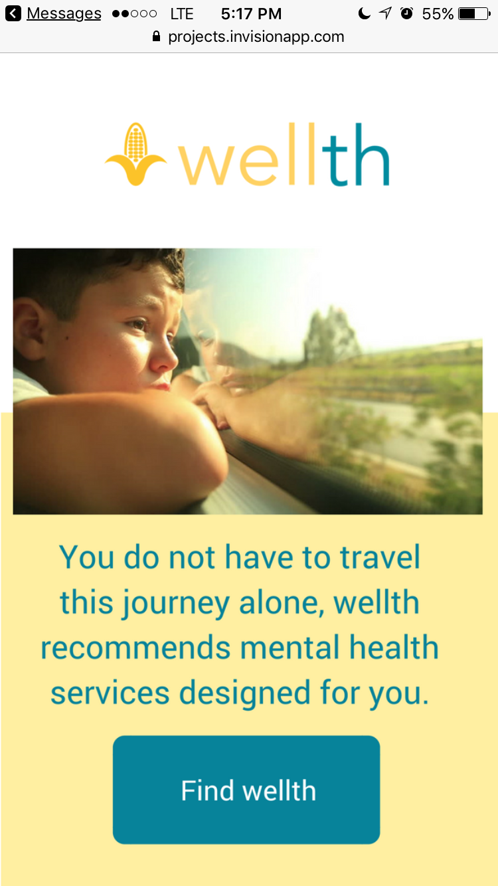
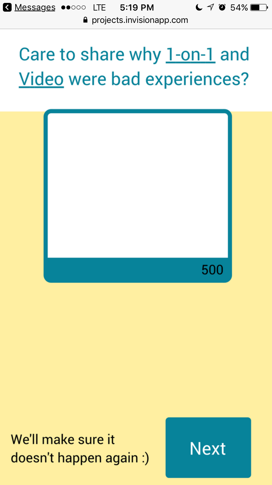
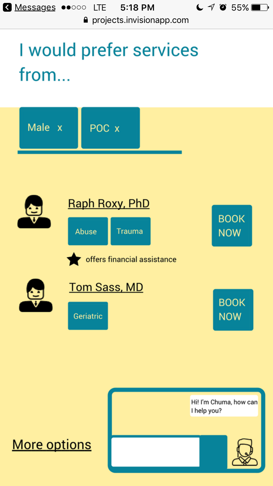

I took part in an IDEO course on prototyping and was part of a virtual team of people around Toronto; we decided to work on mental health access. Our group was very interesting, the three of us were a researcher, a product manager and me, a designer.
Many people who need to get support for mental health issues are afraid to ask for help. There is also little help tailored to the person and what they need. In the course of developing our use case, we spoke to a couple of people who worked at care centers and they gave us feedback on how most people who call-in are too shy to express themselves.
How could we help?
We decided on a web platform to connect resources (counselling, events, group therapy) in the local vicinity to people who need such care. I sketched out a paper prototype on post-it notes and shared with my team mates.
With their feedback, I moved to a clickable prototype using Invision to share with a wider range of people. Simultaneously asking for feedback on the service and monitoring them in use. The prototype can be seen here.
  One of the lessons I got from this process was that people like to describe their particular situation and that we needed to give more room for that.
Tools: Paper, Post-its, Sharpie, Canva, Inkscape, Invision